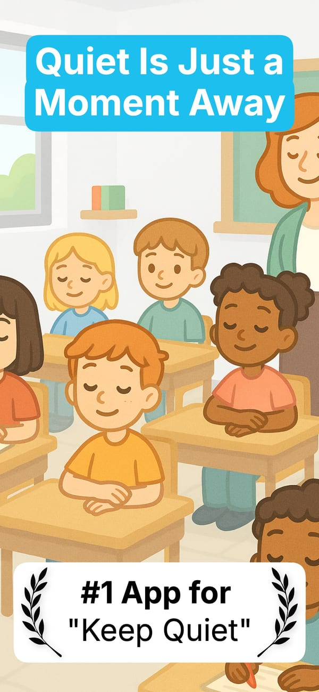
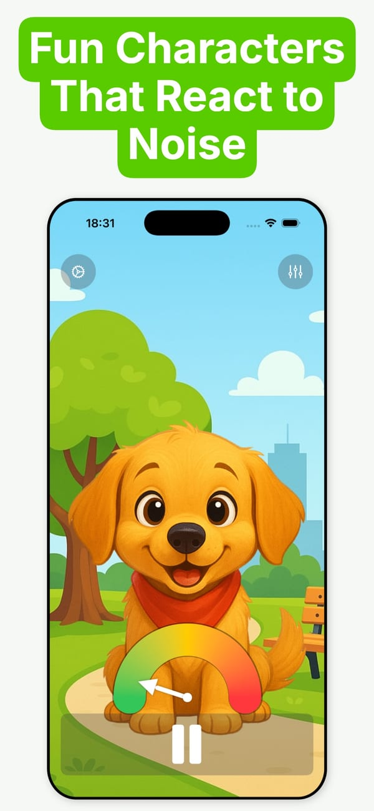
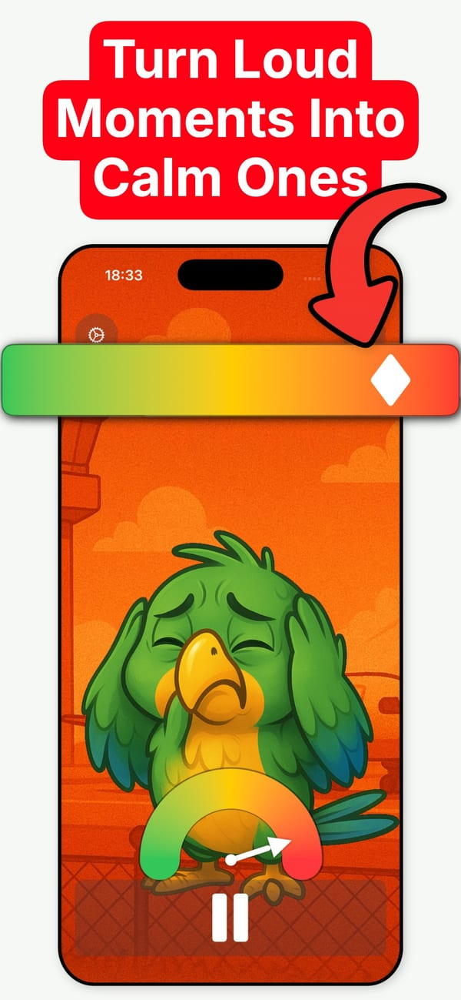
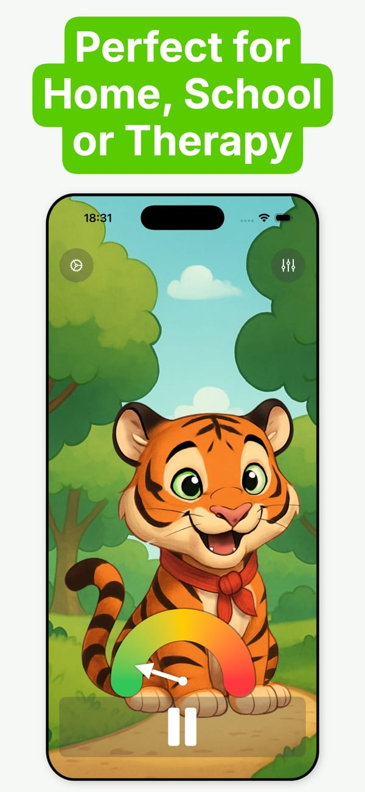
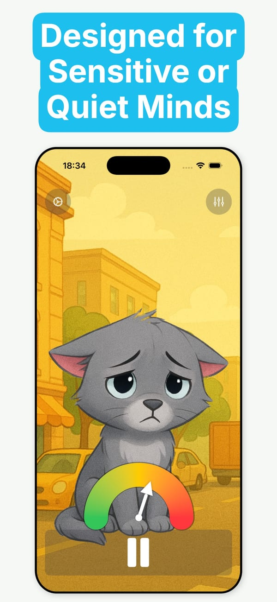
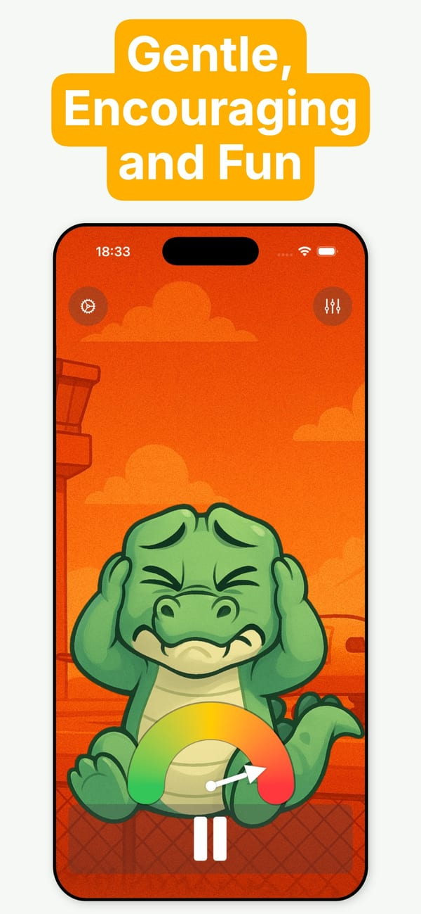

Press play and allow the microphone
The browser asks once. On a smart board or a laptop with a webcam, pick the right microphone in the list under the meter — the choice is remembered on that device.


Everything in the free noise meter stays free. The unlock adds:
Unlock everything
$19.99
one-time
The browser asks once. On a smart board or a laptop with a webcam, pick the right microphone in the list under the meter — the choice is remembered on that device.
The round button top-left switches to fullscreen, and the screen stays awake while the meter runs. Press pause to switch the microphone off.
As the room gets louder the cat covers its ears and the park turns into a busy airport. Use the settings (top-right) to adjust the sensitivity so normal work stays in the green.
Yes, the online noise meter at keepquiet.app is free: no sign-up, no ads and no time limit. The free set is one character (a cat) and one scene. An optional one-time unlock for $19.99 plus tax where applicable adds all 8 characters and 5 backgrounds; the free meter keeps working without it.
No. Audio never leaves your device — sound is analysed in the browser, nothing is recorded, stored or sent. We count anonymous page views and clicks (TelemetryDeck, no cookies), never sound. Pressing pause switches the microphone off.
It works on Chromebook, Windows, Mac and iPad in a current browser (Chrome, Edge, Safari or Firefox) and needs a microphone. The page must be opened over https (keepquiet.app is), and the browser will ask once for microphone permission. On a managed school Chromebook the microphone can be blocked by policy; the IT admin can allow it for keepquiet.app.
Interactive boards often have several microphones (the board itself, a webcam, the connected laptop) and the browser starts with the default one. Choose the right one in the Microphone list under the meter; the choice is remembered on that device. If the meter does not react, try another entry in the list or check that the microphone is not muted in the system settings.
Yes. Noise Meter – Keep Quiet is the same noise meter as an app for iPhone, iPad and Mac, free to download with no ads. The app is installed on your device and works offline, with optional premium characters and themes via in-app purchase. There is no Android app; on Android, Chromebook and Windows use the free online noise meter. Get it on the App Store →
All 8 characters and all 5 backgrounds of the online noise meter, each reacting to the noise level in 3 steps. Everything in the free meter stays free. The unlock is for the web version at keepquiet.app; the iPhone, iPad and Mac app is sold separately in the App Store.
No. It is a one-time payment of $19.99 plus tax where applicable — the exact total is shown before you pay. There is no renewal and no time limit.
No. There is no account at keepquiet.app. Stripe asks for your email address at checkout to send the receipt; we use the same address to send your license key and to restore your purchase later.
Open your restore link on that device, or type your license key — or the email address you paid with — into “Already unlocked? Restore”. The restore link and the key are shown after payment and sent by email. The unlock is for the devices you use yourself, with no device limit; sharing the key with others is not allowed. The unlock is saved in the browser: Safari may forget it after a week away, and shared or managed computers may clear it at sign-out — then open the restore link again.
Type the email address you paid with into “Already unlocked? Restore”: if that email paid, we send the restore link and the key again — check your spam folder too. Use the exact address you entered at checkout. No email after 10 minutes? Write to support@keepquiet.app.
The unlock is sold and charged by Link (Stripe), the seller of the purchase. It appears on your statement as LINK.COM* KEEPQUIET. The price is in US dollars; your bank may convert it.
Yes. Write to support@keepquiet.app within 14 days of the purchase and we ask Stripe to refund you in full, no questions asked; the license key then stops working. This is our own promise on top of the buyer terms of Link (Stripe).
No. The unlock is for the web version at keepquiet.app only. The Noise Meter – Keep Quiet app for iPhone, iPad and Mac has its own optional upgrade, bought separately in the App Store.
A visual noise meter turns sound into something children can see. Keep Quiet uses the device microphone to measure the room's volume in real time: a friendly character changes expression, the scene shifts colour, and a green-to-red dial or bar shows how loud things are — so kids can lower their own volume without being told. It is available as a free online noise meter in the browser and as the Noise Meter – Keep Quiet app for iPhone, iPad and Mac. Learn more →
Open the free online noise meter on the classroom screen, or the app on an iPad mirrored to the whiteboard, pick a character, and let the class watch. As chatter rises the character reacts and the meter climbs toward red, prompting students to self-correct — no shushing needed. Learn more →
Replace verbal reminders with a visual cue. When children can see the noise level — and a character reacting to it — staying quiet becomes a game of keeping the character happy rather than obeying an instruction. Learn more →
Yes, the app has a quiet-time timer. Set a quiet-time goal — say, ten minutes of reading — and the timer runs while the meter shows the live noise level, turning quiet time into a challenge kids can win. The free online noise meter has a quiet-time timer too: choose a preset from 1 to 30 minutes or type your own length from 1 to 90 minutes. It counts only while the meter runs; at 0:00 the meter pauses itself and the timer turns red, with no sound. Learn more →
Yes. Gentle visuals, colour feedback that never punishes, reduced-motion and high-contrast accessibility support, dark interface, and no ads or interruptions make it a good fit for sensory-friendly rooms. The online noise meter respects the reduced-motion setting of the device too. Learn more →
Focused work is comfortable around normal-conversation levels or lower; sustained loud noise makes concentration and reading harder. Every room differs, so the meter shows the level at a glance and lets you set the sensitivity so that "too loud" matches each activity. Learn more →
Yes — free to download on iPhone, iPad and Mac, with no ads. Optional premium upgrades unlock extras like additional characters and themes. Get it on the App Store →
The microphone is used only to measure the volume level in real time so the meter and characters can react. The app is ad-free and rated 4+ on the App Store. Read the privacy policy →
No. Noise Meter – Keep Quiet is made by Natalia Jakubczyk-Gajewska, has App Store ID 6744021866 and its website is keepquiet.app. Some storefronts showed the title "Too Noisy - Keep Quiet" until September 2026; since version 1.0.12 every storefront uses the Noise Meter name. Too Noisy is a different app from another developer. See the app at a glance →
Noise Meter – Keep Quiet is the same noise meter as an installed app for iPhone, iPad and Mac. It works offline and has optional premium characters and themes via in-app purchase.
★ 4.8 rating · No ads · Ages 4+ · iPhone, iPad & Mac · 11 languages
Best for: classrooms up to upper primary, families with children from about 3 to 12, and sensory spaces of any age, where a reacting character on an iPad, iPhone or Mac gets kids to lower their own volume.
For group work, tests and indoor recess, see our classroom noise monitor guide.






Practical, real-world ways to use a visual noise meter — in class, at home, and in sensory-friendly spaces.
How teachers use an on-screen noise monitor to manage volume during group work, tests and indoor recess.
Read the guide → TeachersSave your voice: swap constant shushing for a visual cue students respond to on their own.
Read the guide → TeachersWhat noise levels mean for learning, and how to calibrate the right level for each activity.
Read the guide → Teachers & parentsVoice levels 0–4 explained, plus how a live meter makes "inside voices" concrete for kids.
Read the guide → ParentsDinner tables, car rides, homework time — how a character kids love turns "be quiet" into a game.
Read the guide → ParentsCombine a countdown with a live noise meter so kids can see themselves winning quiet time.
Read the guide → ParentsFresh twists on the classic quiet game — with a noise meter as the impartial referee.
Read the guide → Sensory & SENDUsing gentle visual feedback to make noise predictable and rooms calmer for sensitive kids.
Read the guide →